# image compression function
compress_image <- function(X, k) {
pca <- prcomp(X, center = FALSE, scale. = FALSE) # perform PCA without centering or scaling
Z <- pca$x # principal component scores
U <- pca$rotation # principal component directions
Zk <- Z[, 1:k, drop = FALSE] # keep only the first k principal components
Uk <- U[, 1:k, drop = FALSE]
Xk <- Zk %*% t(Uk) # construct the rank k approximation: X^(k) = z1u'1 + z2u'2 + ... + zku'k
error <- norm(X - Xk, type = "F") # calculate the Frobenius norm error
return(list(approximation = Xk, error = error)) # return the rank k approximation and the error
}PCA for Image Compression
Image Compression Function
Image 1
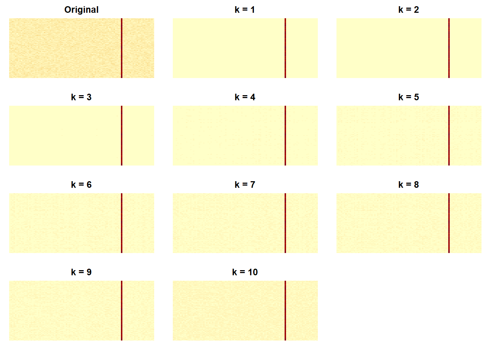
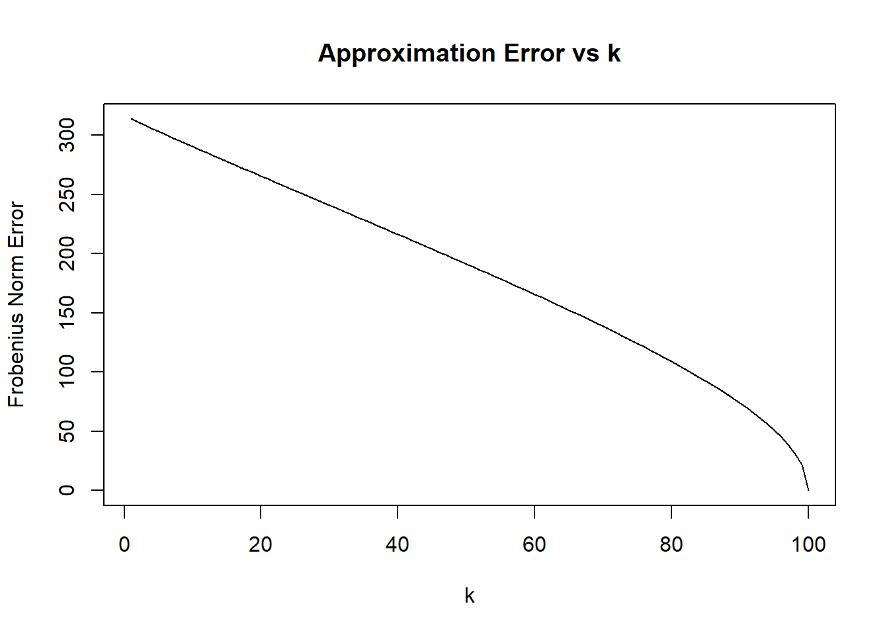
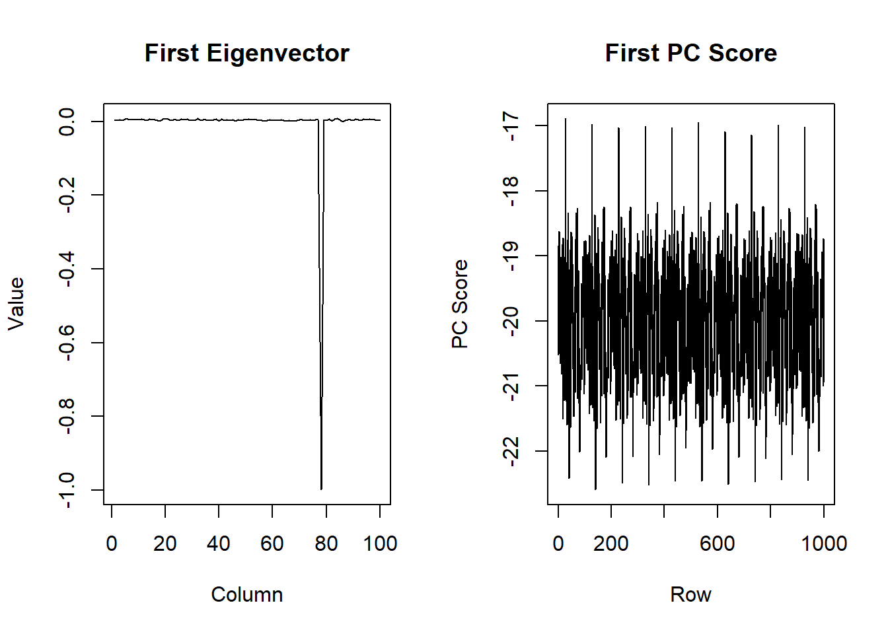
Interpretation
The first eigenvector captures the most dominant feature across the columns of the image matrix. Most of its values are close to zero except for a large negative spike near column 80. This indicates that that column contributes most strongly to the first principal component, which corresponds to the prominent vertical red line in the image. The first PC score shows how strongly each row expresses this feature. Its values stay at a fairly consistent baseline around -20, which is consistent with the red line extending continuously down the image. The fluctuations in the scores reflect row to row variation in the repeating grain/texture visible in the background.
Opinion
I think k = 1 provides a sufficiently good approximation for Image 1 because it captures the dominant feature of the image (the red line) and the general background color. Increasing k adds more of the fine-grained background texture, but doesn’t substantially change the main visual structure of the image.Thus, k = 1 provides a good balance between compression and preserving the most important features.
Image 2
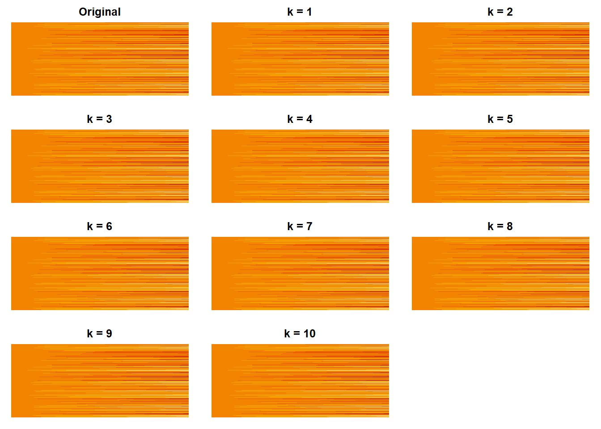
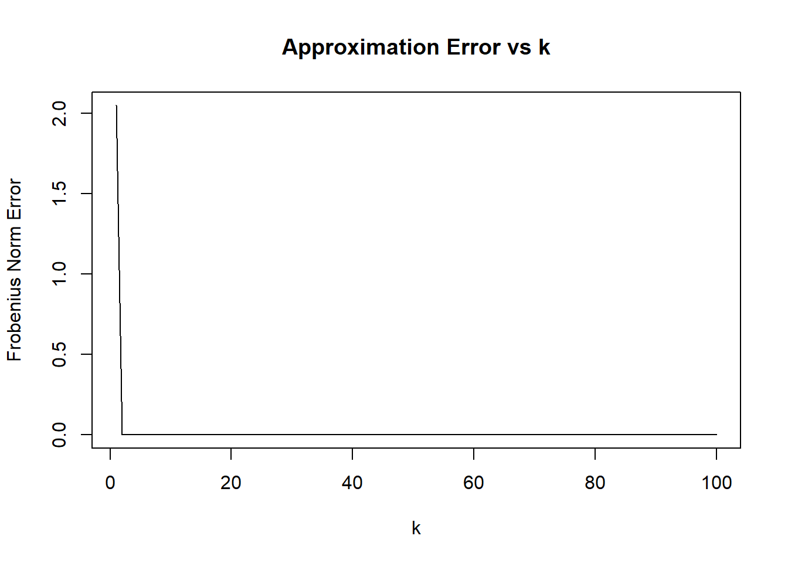
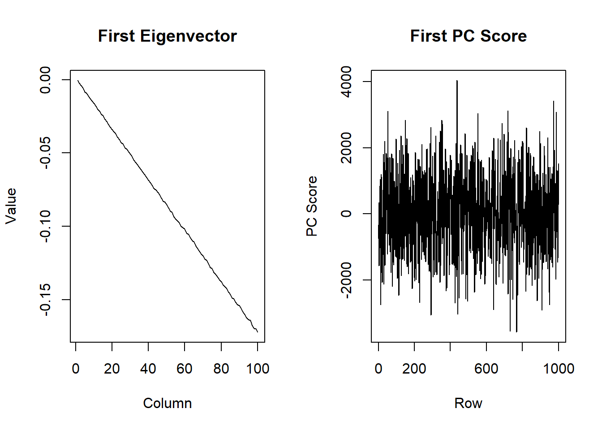
Interpretation
The first eigenvector changes gradually across the columns of Image 2, indicating that the dominant pattern is a smooth left-to-right change in intensity rather than a feature concentrated at one specific location. This matches the original image, where the horizontal streaks generally become more pronounced toward the right side. The first PC score shows how strongly each row expresses this left-to-right pattern. The variation in the scores indicates that different rows express this pattern to different degrees, reflecting differences in intensity and contrast across the horizontal streaks.
Opinion
I think k = 2 provides a sufficiently good approximation for Image 2. The approximation error decreases sharply by k = 2 and is nearly zero for larger values of k, indicating that the first two principal components capture almost all of the important structure in the image. The rank 2 approximation also closely resembles the original image, preserving the dominant horizontal streak pattern.
Image 3
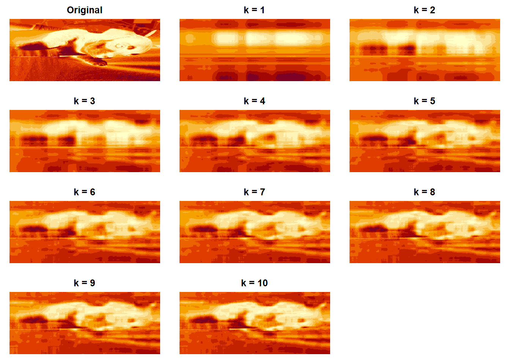
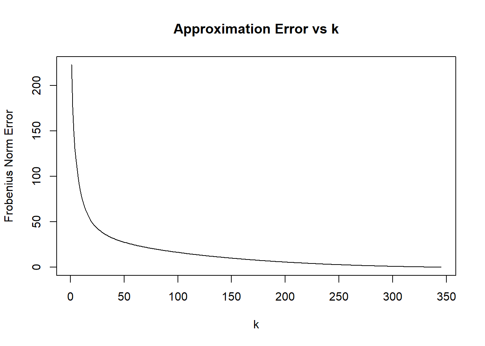
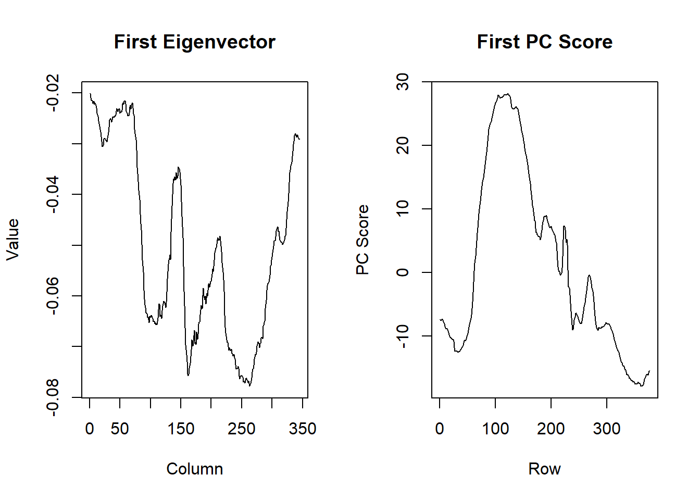
Interpretation
The first eigenvector captures the dominant horizontal pattern across the columns of the image. The larger magnitude troughs around columns 150 and 250 indicate regions that contribute strongly to the first principal component, corresponding to areas of strong intensity variation in the image. The first PC score shows how strongly the dominant pattern is expressed across the rows. The large positive scores around rows 80-160 indicate that this pattern is especially present in the upper portion of the image, where much of the bright dog body is located. The more negative scores in the lower rows (around 50) as well as the highest rows (300+) reflect regions with different intensity patterns, such as the darker floor and background.
Opinion
I think k = 25 provides a sufficiently good approximation for Image 3. The approximation error decreases rapidly for the first several principal components, then starts to flatten around k = 25 (the elbow). Additional components beyond this point produce smaller improvements in the error. The rank 25 approximation also closely resembles the original image, even though it appears slightly blurrier.
Image 4
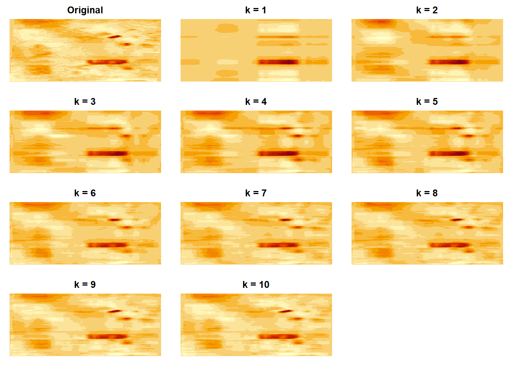
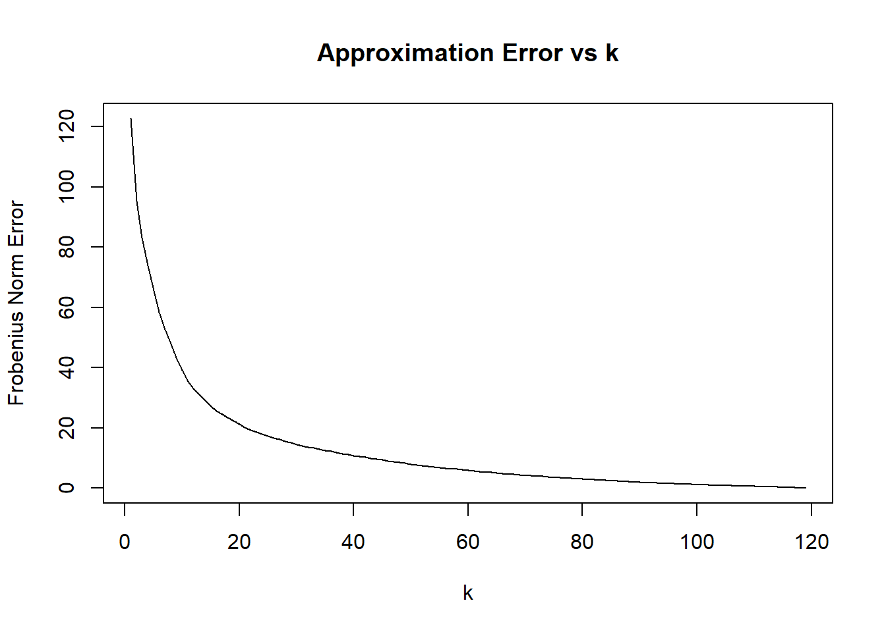
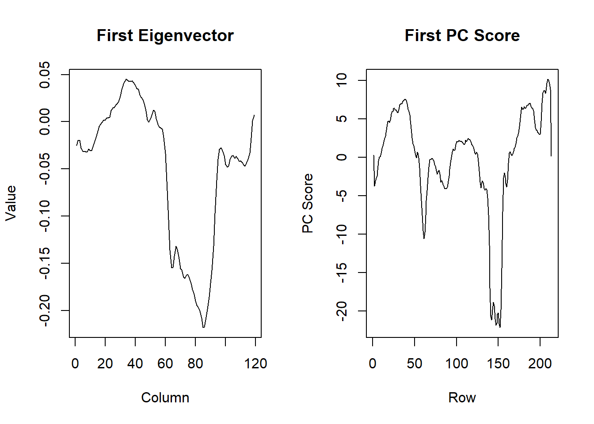
Interpretation
The first eigenvector shows that the dominant feature in Image 4 is concentrated mostly around columns 60-90, where the eigenvector has the largest magnitude. This corresponds to a central region of the image containing strong intensity contrasts. The first PC score shows how strongly this column pattern is expressed across the rows. The scores vary a lot, with notable negative dips around row 60 and especially around rows 140-155. These rows contain strong high-contrast features, indicating that the dominant pattern captured by the first eigenvector is expressed particularly strongly in those horizontal regions of the image.
Opinion
I think k = 10 provides a sufficiently good approximation for Image 4. The approximation error decreases rapidly for the first several principal components and begins to level off around k = 10 (the elbow), so additional components provide progressively smaller reductions in the error. The rank 10 approximation also preserves the major visual features of the original image.